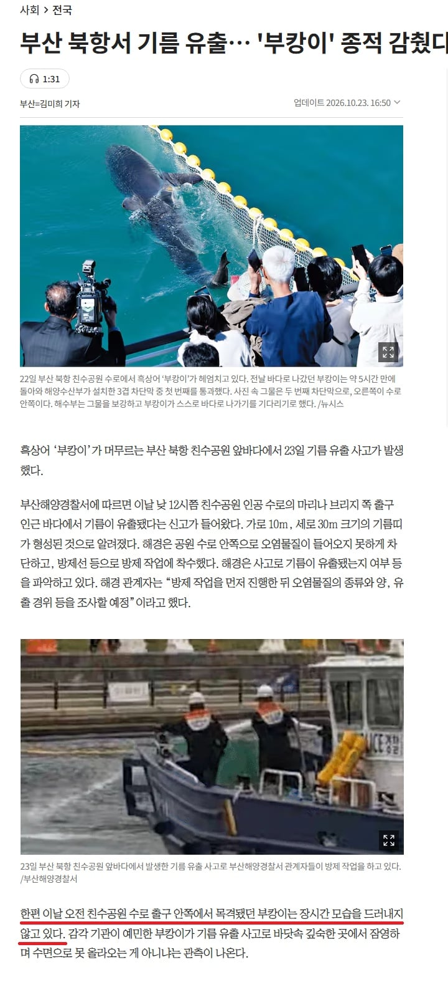
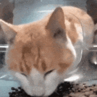

이래도 안나가?

이래도 안나가?
해양 히틀러 ㅋㅋㅋ

우연이지?? 그치???

임마 뱅력 더불러라 새끼야
어 이거 매트릭스 ㅋㅋ


부캉이 목구녕에 기름칠했겠네

북항에서 저런거면 선박유류업자들이 기름옮기다가 파이프에서 샌거일듯 그쪽 ㅈ만한 관리안되는 바지에서하니까 주유할때 ㅈㄴ새는대 그냥 퐁퐁뿌려서 무마하고 만다
부캉이는 자기한테 꺼지라고 기름 뿌린줄 알듯 ㅠㅠ 그동안 내보내려고 별 짓 다했으니
어차피 겨울 다돼서 여기서 죽냐 나가서 죽냐 차이 아님?
아니 걍 전기충격해서 기절시키고 바다에 떤지면 안됨??
누군가는 악역이 돼야만 했다...
잉간이 잉간했다 ;;;;;